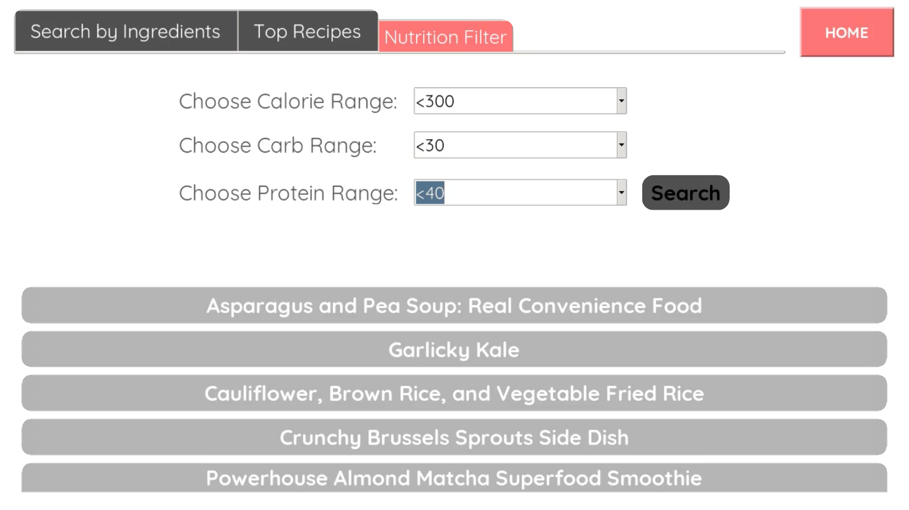

LifeLine
View on GitHub
A Python application that could be run anywhere. It's meant for the elderly population that needs assistance from a nurse or caretaker. At the chance a caretaker is away from the patient, the patient can call for the caretaker, call for a cast of nurses, or call for specific people. The defaults are Lady and Man, but can be customized to anybody.

Main UI
The primary dashboard with 4 easy to read and tap buttons; Made for a touchscreen.
Contacts
You can contact up to 4 numbers with AlertAll.

In-Use
This is it being used for my Grandma
Example Reciept
Along with calling and alarms playing, here is an example text message
Kitchen-mate
View on GitHub
A small device that was made to help around the kitchen all with a touchscreen. Making a casserole? Find the best recipe based on any region through our MasterChef app, manage the ingredients with the PantryPal app, and time your dishes in the oven with Timer. If you are ever bored in the process, play Wordle, check the weather, or listen to music!

Homescreen
This is where the apps are held, inside the collapsable bar.
Example of use
Currently in my kitchen, it's used everyday to make food.
3D-case model
I made a case with the specific device in mind, including screen and ribbon cables that connect the computer together.

Recipe Finder app
This is one of the revolutionary apps that holds over 115 Thousand recipies and menus.
Money-Mate
View on GitHub
A tk-inter based app made for student spending. It tracks student spending and has advanced and basic features. To add transactions you can either manually fill in fields, or talk about your day. When you talk about your day the AI will then create transactions for you making your job easier. Some more basic features are filtered search, summary generator, and view filtered transactions.
Basic UI
This shows an intro screen that gets the jist of the modern UI through the app.
Manage Profiles
Manage up to 3 profiles all kept locally with SQL.
AI integration
This is our built-in AI that takes information about your day and automatically puts in your purchases and income
ChatBot
This is a chatbot that answers any questions in any form u ask it
ButtonUI
All handmade UI for buttons.